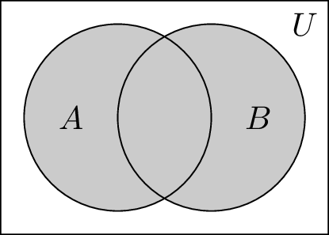
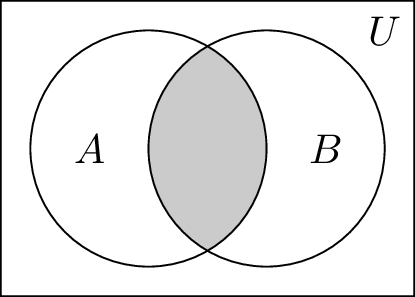
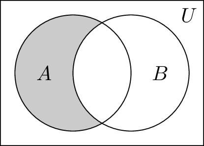
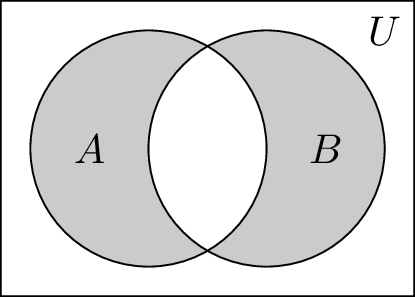
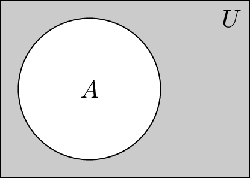

A={-2,0,1,4}
print(A, 1 in A, 5 in A){0, 1, 4, -2} True FalseDéfinition 3.1 (Ensemble, élément) Un ensemble est un collection non ordonnée d’objets. Les objets sont appelés éléments de l’ensemble et on dit qu’ils appartiennent à l’ensemble.
Notation : \(x\in F\) signifie que \(x\) est un élément de l’ensemble \(F\). On dit aussi que \(x\) appartient à l’ensemble \(F\).
Définition 3.2 (Ensemble fini ou infini, cardinalité) Soit \(A\) un ensemble composé de \(n\) éléments distincts. On dit que \(A\) est un ensemble fini de cardinalité \(n\) et on note \(|A|=n\). Un ensemble est dit infini s’il n’est pas fini.
Exemple 3.1 Soit l’ensemble \(F=\set{2,\pi,7}\). Utilisez les symboles introduits pour traduire les énoncés suivants: l’ensemble \(F\) contient 3 éléments, \(\pi\) appartient à \(F\), 5 n’appartient pas à \(F\).
On peut décrire un ensemble en extension (on énumère ses éléments que l’on place entre accolades) \[ A=\set{5,7,9,11} \qquad B=\set{1,8,27,64} \] ou en compréhension, comme ceci: \[ A=\set{x\in\mathbb{N}\mid (x\ \text{est impair}) \wedge (5\leq x \leq 11)} \qquad B=\set{x\in\mathbb{N}\mid (x \leq 64) \wedge (\exists\ y\in \mathbb{N},\ y^3=x)} \]
Pour créer un ensemble dans Python, nous allons utiliser une paire d’accolades { } et placer les différents éléments de notre ensemble entre ces accolades en les séparant avec une virgule. De plus, nous pouvons vérifier si un élément appartient à l’ensemble en utilisant la commande in.
A={-2,0,1,4}
print(A, 1 in A, 5 in A){0, 1, 4, -2} True FalsePour calculer la cardinalité d’un ensemble dans Python, vous utilisez la fonction len(). En Python, il faut être prudent si on souhaite utiliser l’ensemble vide, \(\emptyset\). Si vous utilisez {} pour décrire l’ensemble vide, Python va plutôt l’interpréter comme un dictionnaire vide. Vous devez plutôt utiliser la fonction set().
A = {2,3,5,8}
B = set()
C = {0}
print(len(A), len(B), len(C))4 0 1Nous détaillerons dans la Table 3.1, les ensembles de nombres les plus communs.
| Ensemble | Description |
|---|---|
| \(\emptyset = \set{\phantom{1}}\) | Ensemble vide (ne contient aucun élément \(\mid\emptyset\mid=0\)) |
| \(\mathbb{N}=\set{0,1,2,3,\ldots}\) | Ensemble des nombres naturels |
| \(\mathbb{N^*}=\set{1,2,3,\ldots}\) | Ensemble des nombres naturels strictement positifs |
| \(\mathbb{Z}=\set{\ldots,-2,-1,0,1,2,\ldots}\) | Ensemble des nombres entiers |
| \(\mathbb{Z^*}=\set{\ldots,-2,-1,1,2,\ldots}\) | Ensemble des entiers non nuls |
| \(\mathbb{Q}=\set{\frac{p}{q}\mid p\in\mathbb{Z},q\in\mathbb{Z}\ \text{et}\ q\neq 0}\) | Ensemble des nombres rationnels |
| \(\mathbb{R}\) | Ensemble des nombres réels |
| \(\mathbb{R^+}=\set{x\in\mathbb{R}\mid x\geq 0}\) | Ensemble des nombres réels positifs |
| \(\mathbb{C}=\set{a+bi\mid a\in \mathbb{R}\ \text{et}\ b\in\mathbb{R}}\) avec \(i^2=-1\) | Ensemble des nombres complexes |
Exemple 3.2 Établissez un lien entre les ensembles décrits par compréhension aux parties a. à f. avec le même ensemble décrit par extension aux parties 1 à 6.
Lorsqu’il y a trop d’éléments dans un ensemble pour être en mesure de tous les écrire, nous utilisons souvent les trois-points (\(\ldots\)) lorsque la suite d’éléments est claire. Par exemple, nous avons: \[ \mathbb{Z}=\set{\ldots,-3,-2,-1,0,1,2,3,\ldots} \]
En Python, si vous avez un ensemble décrit par compréhension, il est particulièrement facile de le créer avec une compréhension de liste. L’idée est simple: simplifier le code pour le rendre plus lisible et donc plus rapide à écrire et plus simple à maintenir. La syntaxe est la suivante:
new_list = [function(item) for item in list if condition(item)]
new_list = {function(item) for item in list if condition(item)}Par exemple, si vous voulez créer l’ensemble \(\set{x^3\mid 0\leq x < 10}\), nous pouvons le faire en Python de la manière suivante:
ensemble = {x**3 for x in range(10)}
liste = [x**3 for x in range(10)]
print(ensemble, liste){0, 1, 64, 512, 8, 343, 216, 729, 27, 125} [0, 1, 8, 27, 64, 125, 216, 343, 512, 729]Remarquez que dans l’ensemble, les éléments ne sont pas ordonnés, tandis qu’ils le sont dans la liste.
Définition 3.3 (Égalité d’ensembles) Deux ensembles sont dits égaux si et seulement s’ils contiennent exactement les mêmes éléments. \[ A=B \leftrightarrow \forall\ x\ (x\in A \leftrightarrow x\in B) \]
Exemple 3.3 Les ensembles suivants sont-ils égaux? \[\begin{align*} \set{1,3,5} &\stackrel{?}{=} \set{3,5,1} \\ \set{1,3,5} &\stackrel{?}{=} \set{\set{1},\set{3},\set{5}} \end{align*}\]
Définition 3.4 (Sous-ensemble) L’ensemble \(A\) est sous-ensemble de l’ensemble \(B\) si et seulement si tous les éléments de \(A\) sont aussi des éléments de \(B\): \[ A \subseteq B \leftrightarrow \forall\ x\ (x\in A \rightarrow x\in B) \] L’ensemble \(A\) est sous-ensemble strict (ou propre) de l’ensemble \(B\) si et seulement si tous les éléments de \(A\) sont aussi des éléments de \(B\) et \(A\) n’est pas égal à \(B\): \[ A \subset B \leftrightarrow A\subseteq B \wedge\ A\neq B \]
Exemple 3.4 Convainquez-vous des affirmations suivantes. \[\begin{align*} \set{1,2} &\subseteq \set{1,2,3,4,5} \\ \set{1,2} &\subset \set{1,2,3,4,5} \\ \set{2k\mid k\in\mathbb{N}} &= \set{0,2,4,6,\ldots}\subset\mathbb{N} \end{align*}\]
| Notation | Description |
|---|---|
| \(\in\) | \(2\in\set{1,2,3}\) indique que 2 est un élément de l’ensemble \(\set{1,2,3}\). |
| \(\not\in\) | \(4\not\in\set{1,2,3}\) indique que 4 n’est pas un élément de l’ensemble \(\set{1,2,3}\). |
| \(\subseteq\) | \(A\subseteq B\) indique que \(A\) est un sous-ensemble de \(B\): chaque élément de \(A\) est aussi un élément de \(B\). |
| \(\subset\) | \(A\subset B\) indique que \(A\) est un sous-ensemble propre de \(B\): chaque élément de \(A\) est aussi un élément de \(B\), mais \(A\neq B\). |
Théorème 3.1 Pour tout ensemble \(A\), on a :
Théorème 3.2 \(A=B\) si et seulement si \(A\subseteq B\) et \(B\subseteq A\).
En Python, nous pouvons utiliser la fonction issubset pour vérifier qu’un ensemble est sous-ensemble d’un autre.
A = {2,4,6,8,10,12}
B = {4,8,12}
print(A.issubset(B), B.issubset(A))False TrueDéfinition 3.5 (Produit cartésien) Le produit cartésien des ennsembles \(A\) et \(B\), noté \(A\times B\), est L’ensemble de tous les couples (paires ordonnées) dont le premier élément appartient à \(A\) et le second, à \(B\): \[ A\times B = \set{(a,b)\mid\ a\in A\ \text{et}\ b\in B} \] On généralise cette définition au produit cartésien de \(n\) ensembles: \[ A_1 \times A_2 \times \ldots \times A_n = \set{(a_1,a_2,\ldots,a_n)\mid\ a_1\in A_1,\ldots, a_n\in A_n} \]
Exemple 3.5 Décrivez en extension les produits cartésiens \(A\times B\) et \(B\times A\), où \(A=\set{0,1,2}\) et \(B=\set{a,c}\).
Définition 3.6 (Relation) Une relation entre les ensembles \(A\) et \(B\) est un sous-ensemble du produit cartésien \(A\times B\).
Exemple 3.6 Soit $A= et $B=. L’ensemble \[ R=\set{(0,a),(1,c),(2,a)}\subseteq A\times B \] est une relation de \(A\) dans \(B\).
Définition 3.7 L’ensmeble des parties de \(A\), noté \(\mathcal{P}(A)\), est l’ensemble de tous les sous-ensembles de \(A\). \[ B\in \mathcal{P}(A) \leftrightarrow B \subseteq A \]
Exemple 3.7 Décrivez \(\mathcal{P}(A)\), l’ensemble des parties de \(A\), où \(A=\set{0,1,2}\).
| \(k\) | Sous-ensembles de \(A\) ayant \(k\) éléments | Nombre de sous-ensembles |
|---|---|---|
| 0 | \(\emptyset\) | 1 |
| 1 | \(\set{0}\), \(\set{1}\), \(\set{2}\) | 3 |
| 2 | \(\set{0,1}\), \(\set{0,2}\), \(\set{1,2}\) | 3 |
| 3 | \(\set{0,1,2}\) | 1 |
Exemple 3.8 Décrivez \(\mathcal{P}(A)\), l’ensemble des parties de \(A\), où \(A=\set{0,1,2,3}\).
| \(k\) | Sous-ensembles de \(A\) ayant \(k\) éléments | Nombre de sous-ensembles |
|---|---|---|
| 0 | ||
| 1 | ||
| 2 | ||
| 3 | ||
| 4 |
Soit \(U\) l’ensemble universel et \(A\) et \(B\) des sous-ensembles de \(U\). Les opérations suivantes génèrent des sous-ensembles de \(U\).
| Opération | Forme mathématique |
|---|---|
| Union | \(\set{x\in U\mid\ x\in A\ \vee\ x\in B}\) |
| Intersection | \(\set{x\in U\mid\ x\in A\ \wedge\ x\in B}\) |
| Différence | \(\set{x\in U\mid\ x\in A\ \wedge\ x\not\in B}=A\setminus B\) |
| Différence symétrique | \(\set{x\in U\mid\ x\in A\ \oplus\ x\in B}\) |
| Complément | \(\set{x\in U\mid\ x\not\in A}=U-A\) |





Vous pouvez effectuer ces opérations dans Python à l’aide des commandes suivantes:
| Opération | Commande Python |
|---|---|
| Union | union |
| Intersection | intersection |
| Différence | difference |
A = {-3,-1,2,5}
B = {-1, 0, 2}
print(A.union(B)){0, 2, 5, -3, -1}A = {-3,-1,2,5}
B = {-1, 0, 2}
print(A.intersection(B)){2, -1}A = {-3,-1,2,5}
B = {-1, 0, 2}
print(A.difference(B)){5, -3}